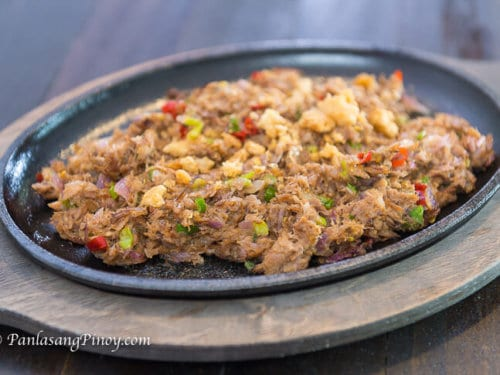

TUNA SISIG

Description
A quick sisig recipe made with cheap canned tuna. Perfect for students and people on a budget!
Don't get fooled on this easy recipe as it still taste absolutely delicious!
Servings: 2-3
Ingredients
- 420g Century Tuna, Flakes in Oil
- 1pc Large onion (chopped)
- 3tbsp Ginger (minced)
- 1clove Garlic
- 4pcs Green Chili (chopped)
- 1/2tsp Ground Pepper
- 1tbsp Brown Sugar
- 2pcs Small calamansi or 1/4 lemon
- 1/4cup or 1 small pack of mayonnaise
- 1/4cup Oil
- 1cup Crushed pork chicharon
Steps
- Prepare and chop Ginger, Chili, Garlic, and Onion then set aside
- Completely drain tuna of its oils and set aside
- On a pan put the oil and let it heat up. Once it starts to smoke, put the tuna and cook.
- After 15 min or when the tuna is brown, crispy and completely drained of any oils, mix a half of the ginger and let it cook for another 5 min.
- On a bowl, mix the mayonnaise, brown sugar, pepper, calamansi, and all the ingredients that we prepared earlier
- Mix the tuna and our mixture. Enjoy!
Links
For similar recipes click HERE